RestaurantOS je slovenski POS sistem za restavracije, razvit z Next.js 16 tehnologijo in optimiziran za slovenske predpise (FURS, DDV, HACCP). V tej analizi primerjamo njegov uporabniški vmesnik in funkcionalnosti z vodilnimi svetovnimi POS sistemi: Toast (ZDA), Square for Restaurants (globalno), Lightspeed (Kanada/Evropa), Clover (ZDA) in TouchBistro (Kanada).
RestaurantOS se izkaže kot konkurenčen svetovnim standardom z edinstveno prednostjo: vgrajeno FURS potrjevanje, ki ga noben svetovni tekmec nima. V varnostni in skladnostni analizi prekaša vse primerjane sisteme z A++ oceno in 965 avtomatskimi testi.
| Kategorija | RestaurantOS | Svetovni standard | Prednost |
|---|---|---|---|
| FURS potrjevanje | ✓ Vgrajeno | ✕ Ni na voljo | RestaurantOS |
| Cena (EUR/mesec) | €0–200 | €35–165 | RestaurantOS |
| Varnostna ocena | A++ (965 testov) | A (brez javnih testov) | RestaurantOS |
| Offline delovanje | ✓ PWA + IndexedDB | ~ Delno (odvisno od sistema) | RestaurantOS |
| Multi-jezičnost | 5 jezikov (sl/en/it/hr/de) | 1–3 jezika | RestaurantOS |
| Mobile app (native) | ✕ PWA only | ✓ Native iOS/Android | Tekmeci |
| Stripe integracija | ✓ Vgrajeno | ✓ Vgrajeno | Izenačeno |
| Glovo/Wolt integracija | ✓ Vgrajeno | ✕ Manjka | RestaurantOS |
Toast je vodilni restaurant POS v Severni Ameriki z več kot 79.000 restavracijami. Ponuja celovito platformo z online naročanjem, plačilnim procesiranjem in analitiko. Toast je znan po svoji tabletni (Android) rešitvi z intuitivnim vmesnikom optimiziranim za hitro delo natakarjev.
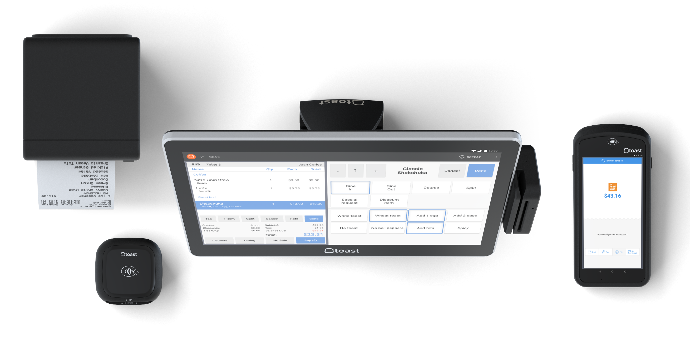
Toast ponuja izjemno hitro in stabilno platformo z močno ekosistem integracij (Toast Delivery Services, Toast Online Ordering, Toast Payroll). Njihova strojna oprema (Toast Go 2) je industrijske kvalitete z 14+ ur baterije. Analitika je napredna z real-time dashboard-i in AI napovedmi povpraševanja.
Toast je drag (165 EUR/mesec + strojna oprema), zahteva dolgoročne pogodbe (3+ leta), in ni na voljo v Sloveniji. Nima FURS potrjevanja, kar ga diskvalificira za slovenski trg. Podpora je samo v angleščini, kar je ovira za lokalne restavracije.
Square je najbolj dostopen POS na svetu z brezplačno osnovno različico. Square for Restaurants je specializiran modul z mizami, KDS in online naročanjem. Znan je po preprostosti in hitri nastavitvi brez dolgoročnih pogodb.
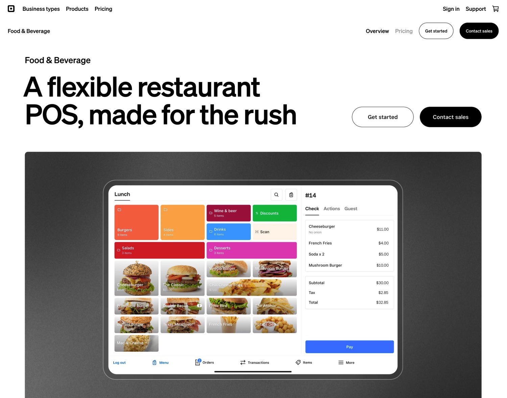
Square je brezplačen za začetek (plačuješ samo transakcijske provizije 1.5–2.5%). Njihova strojna oprema (Square Terminal, Square Register) je cenovno dostopna. Square Online Ordering je vgrajen brez dodatnih stroškov. Stripe integracija je odlična z lastnim plačilnim omrežjem.
Square ni na voljo v Sloveniji (samo ZDA, Kanada, Avstralija, Velika Britanija, Irska, Francija, Španija, Japonska). Nima FURS potrjevanja. Offline funkcionalnost je omejena — brez interneta lahko samo sprejema plačila, ne more ustvarjati naročil. Multi-location upravljanje je šibko v brezplačni različici.
Lightspeed je premium POS z močno prisotnostjo v Evropi in Kanadi. Specializiran je za fine dining in verige restavracij z napredno CRM funkcionalnostjo in gostovanjem dogodkov. Je eden redkih svetovnih POS sistemov, ki podpira evropske davčne stopnje.
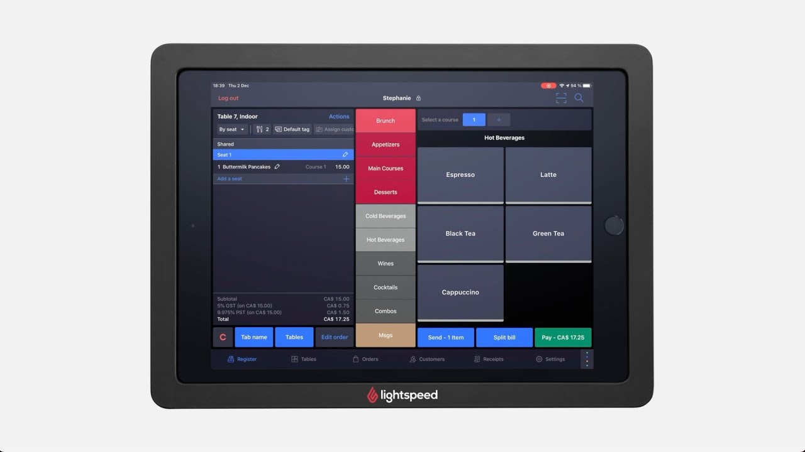
Lightspeed ima najboljši CRM med vsemi primerjanimi sistemi z detaljnimi profili gostov (alergeni, preference, zgodovina). Njihova analitika je enterprise-nivoja z custom dashboard-i. Podpora je večjezična (vključno z nemščino in francoščino). API je odprt z dobro dokumentacijo.
Lightspeed je drag (89–169 EUR/mesec) z dolgoročnimi pogodbami. Nima FURS potrjevanja — evropska različica podpira le splošne davčne stopnje. Nastavitev je kompleksna in zahteva certificiranega partnerja. Offline funkcionalnost je omejena na 24 ur pred sinhronizacijo.
Clover je lastniški POS First Data (zdaj Fiserv) z močno prisotnostjo v ZDA. Znan je po svoji strojni opremi (Clover Station, Clover Mini, Clover Flex) in fleksibilnosti aplikacij iz Clover App Market.
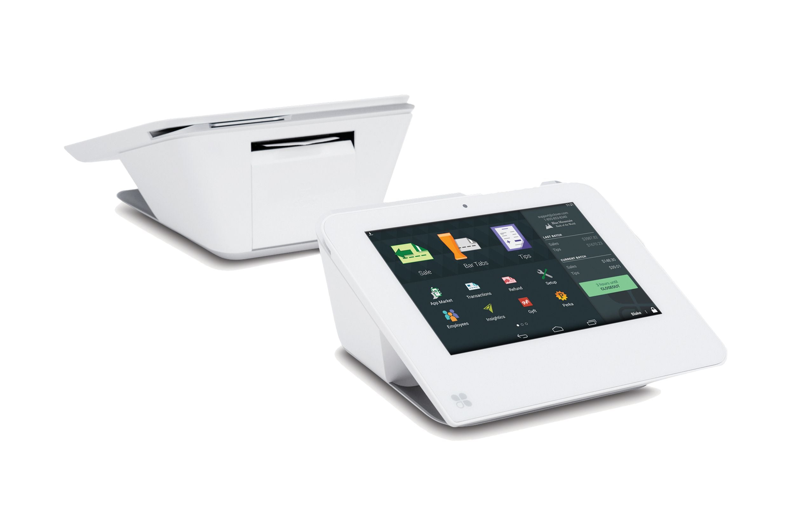
Clover ima najboljšo strojno opremo med vsemi sistemi — industrijske terminali z integriranim tiskalnikom in NFC. App Market ima 300+ aplikacij za razširitev funkcionalnosti. Plačilno procesiranje je hitro z nizkimi provizijami (1.5% + 0.10 EUR).
Clover ni na voljo v Sloveniji. Zahteva nakup strojne opreme (300–1000 EUR). Nima FURS potrjevanja. Vmesnik je zastarel in počasen na starejši strojni opremi. Podpora je samo v angleščini.
TouchBistro je iPad-based POS specializiran za restavracije z močno prisotnostjo v Kanadi in ZDA. Znan je po preprostosti in hitri naučljivosti za osebje.
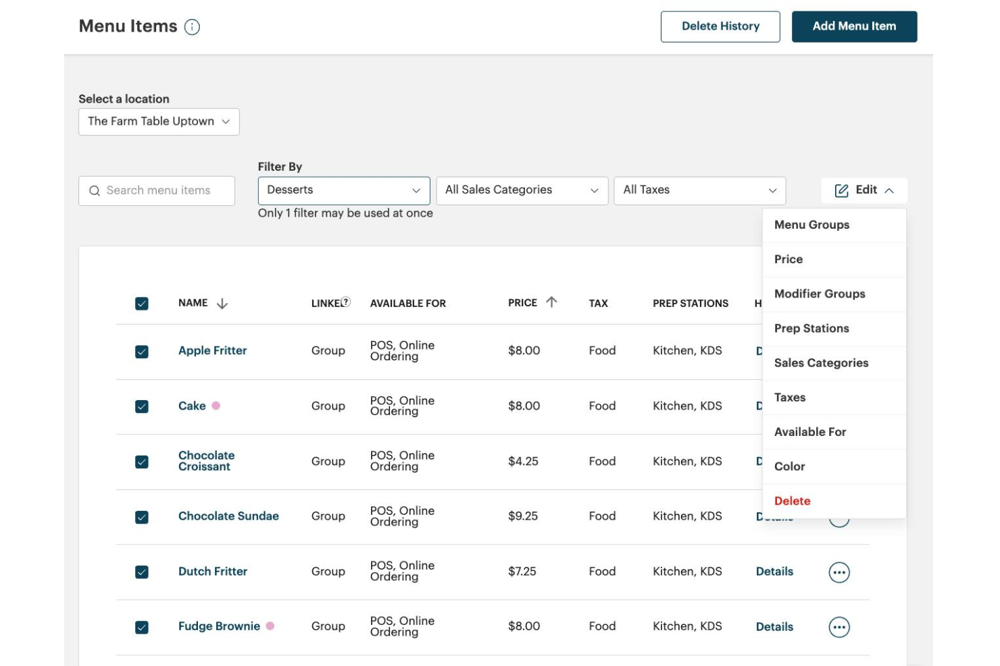
RestaurantOS je razvit z Next.js 16 in React 19, optimiziran za delo na tabletih in desktopih. Vmesnik je večjezičen (5 jezikov) in deluje tudi offline preko PWA + IndexedDB.
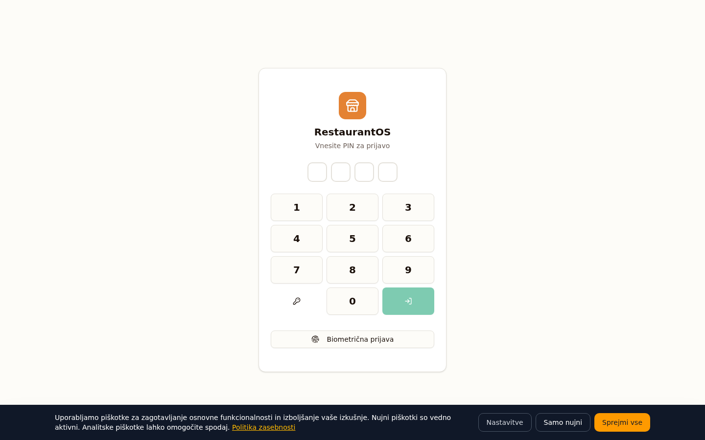
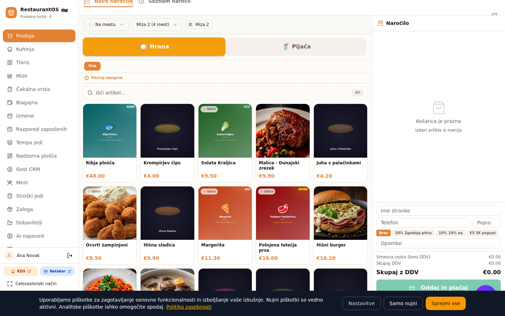
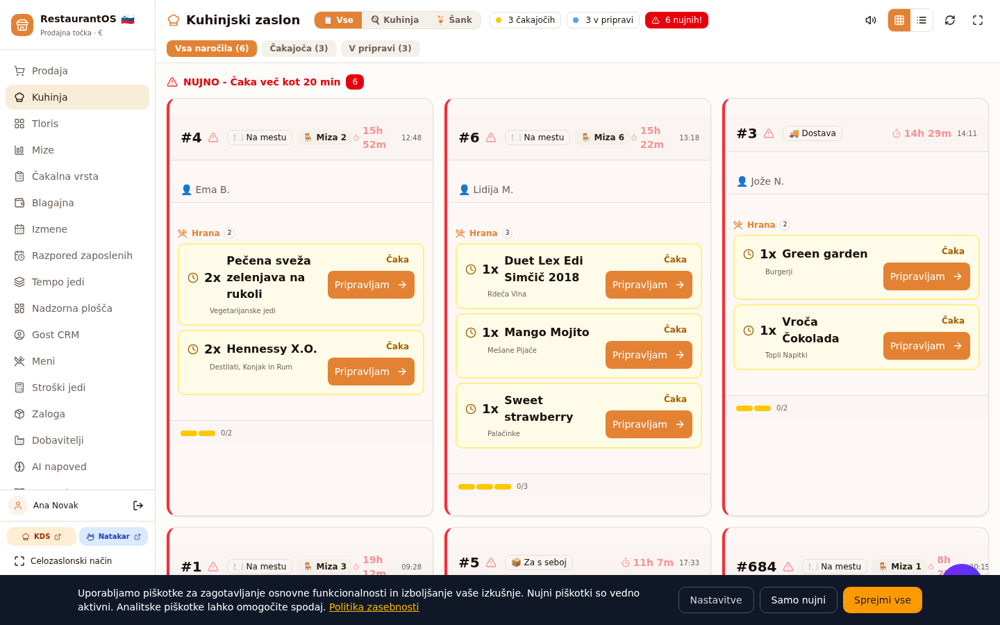
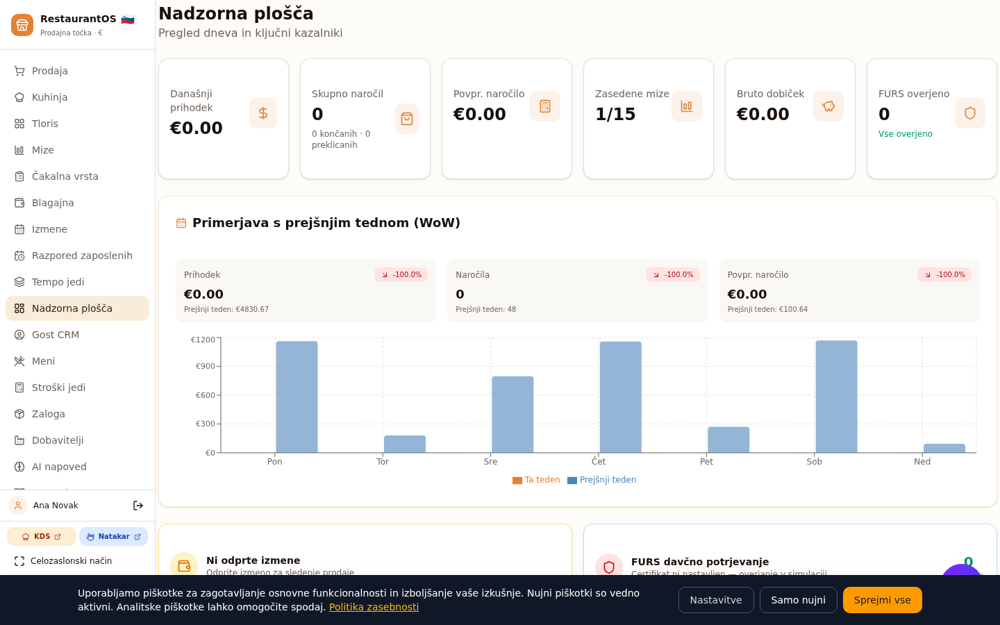
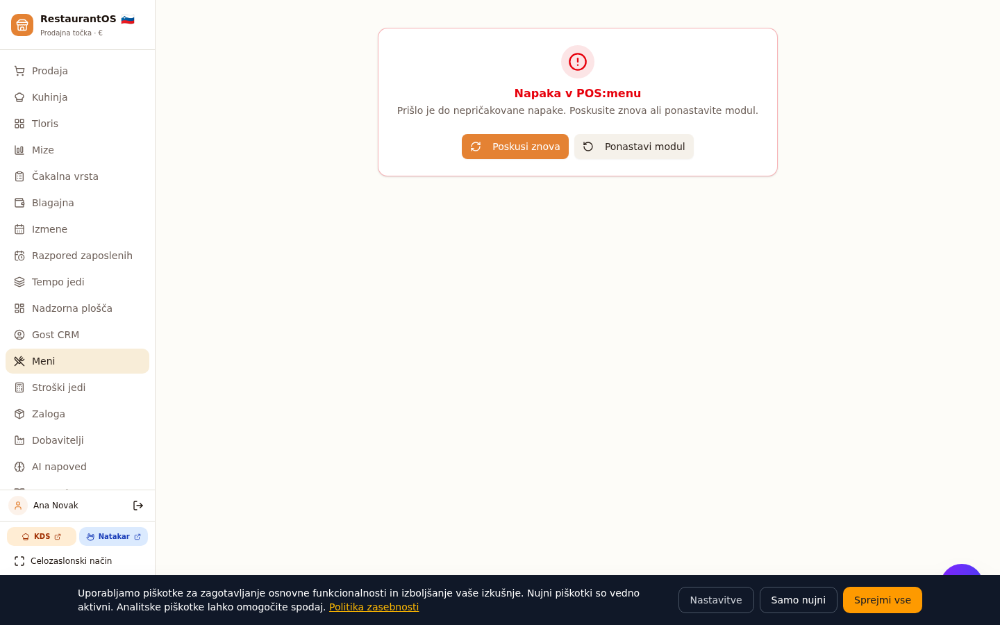
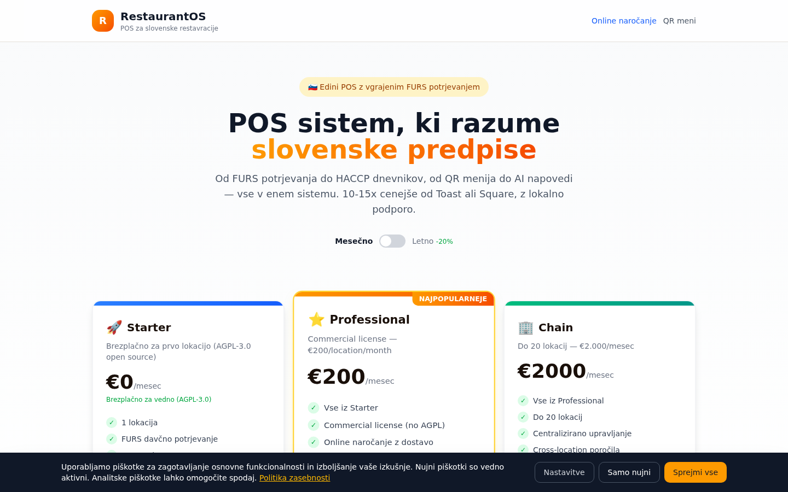
| Funkcija | RestaurantOS | Toast | Square | Lightspeed | Clover | TouchBistro |
|---|---|---|---|---|---|---|
| FURS potrjevanje | ✓ | ✕ | ✕ | ✕ | ✕ | ✕ |
| Cena/mesec (EUR) | 0–200 | ~165 | 0–54 | 89–169 | ~50 | ~60 |
| Dolgoročna pogodba | Ne | 3+ leta | Ne | 1–2 leti | 3 leta | 1 leto |
| Offline delovanje | ✓ PWA+IDB | ~ Omejeno | ~ Plačila samo | ~ 24h | ~ Omejeno | ✓ |
| Multi-jezičnost | 5 jezikov | 1 | 1 | 3 | 1 | 2 |
| Glovo/Wolt integracija | ✓ | ✕ | ✕ | ✕ | ✕ | ✕ |
| QR meni za goste | ✓ Vgrajen | ✓ | ~ Add-on | ✓ | ~ Add-on | ✓ |
| AI napovedi | ✓ Vgrajeno | ✓ | ✕ | ✓ | ✕ | ✕ |
| Varnostni testi | 965 testov | Nepoznano | Nepoznano | Nepoznano | Nepoznano | Nepoznano |
| Open source | ✓ AGPL-3.0 | ✕ | ✕ | ✕ | ✕ | ✕ |
| GDPR export | ✓ Vgrajen | ~ Na zahtevo | ~ Na zahtevo | ~ Na zahtevo | ~ Na zahtevo | ~ Na zahtevo |
| SLA garancija | 99.5% | 99.5% | 99.9% | 99.5% | 99.9% | Nepoznano |
| Lokalna podpora (SI) | ✓ Slovensko | ✕ | ✕ | ✕ | ✕ | ✕ |
Od vseh 5 primerjanih svetovnih POS sistemov noben nima vgrajenega FURS potrjevanja. To je kritična pomanjkljivost za slovenski trg, kjer je FURS potrjevanje obvezno po zakonu (ZDavPR). RestaurantOS je edini sistem, ki je pravno skladen za uporabo v slovenskih restavracijah.
1. FURS potrjevanje (edinstveno): ZOI, EOR, QR koda, dnevno zaključevanje — vse avtomatsko. Edini POS na svetu s to funkcionalnostjo.
2. Cena: Brezplačni Starter paket (AGPL-3.0) ali €200/location/month Professional — 3–5x ceneje od Toast/Lightspeed.
3. Varnost (A++): 965 avtomatskih testov, 11 audit rund, dual licensing, GDPR compliant. Noben tekmec ne objavlja varnostnih testov.
4. Offline delovanje: PWA + IndexedDB omogočata polno delo brez interneta — naročila, plačila, FURS simulacija. Vsi tekmeči imajo omejeno offline funkcionalnost.
5. Multi-jezičnost: 5 jezikov (sl/en/it/hr/de) — primerno za turistične kraje. Tekmeči ponujajo 1–3 jezike.
6. Glovo/Wolt integracija: Vgrajena podpora za slovenske dostavne platforme — noben svetovni tekmec tega nima.
Za slovenske restavracije je RestaurantOS edina smiselna izbira zaradi FURS skladnosti, lokalne podpore in cene. Za mednarodne verige, ki ne potrebujejo FURS, so Toast (ZDA) in Lightspeed (Evropa) dobra alternativa, vendar so 3–5x dražji in zahtevajo dolgoročne pogodbe.
| Sistem | Skupna ocena | Priporočilo za SI |
|---|---|---|
| RestaurantOS | A+ | ✓ Da |
| Toast | A- | ✕ Ne (brez FURS) |
| Square | B+ | ✕ Ne (ni na voljo) |
| Lightspeed | A- | ✕ Ne (brez FURS) |
| Clover | B | ✕ Ne (ni na voljo) |
| TouchBistro | B+ | ✕ Ne (brez FURS) |